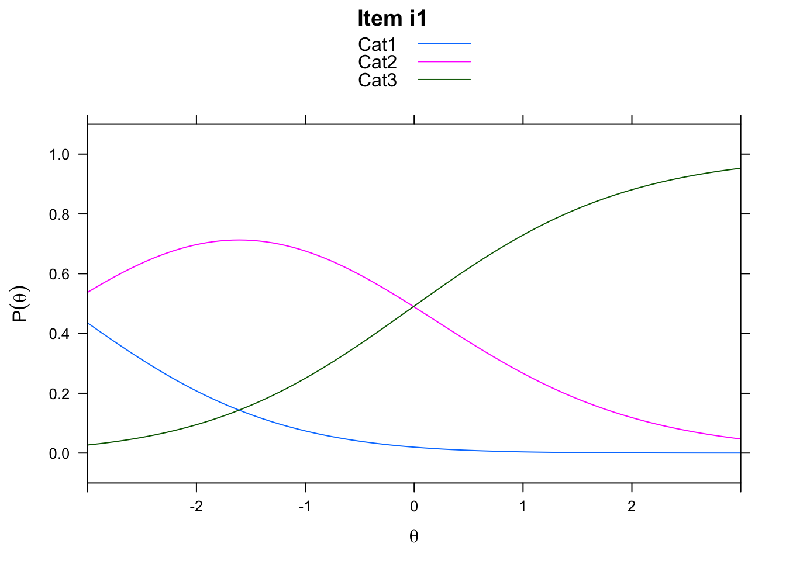

Chapter 3 View(difficulty)
View Item Difficulty
The item difficulty parameters (xsi) are the item location estimates on the logit scale that represents the latent variable. Assuming that the responses are scored such that lower scores (x = 0) indicate lower locations on the latent variable (e.g., incorrect, negative, or absent responses), then lower item estimates on the logit scale indicate items that are more difficult or require persons to have relatively higher locations on the construct to provide a correct response. On the other hand, higher item estimates on the logit scale indicate items that are easier or require persons to have relatively lower locations on the construct to provide a correct response. In our analysis, Task 9 is the most difficult item (xsi = 1.00), whereas Task 6 is the easiest item (xsi = -4.07).
The standard error (se.xsi) for each item is an estimate of the precision of the item difficulty estimates, where larger standard errors indicate less-precise estimates. Standard errors are reported on the same logit scale as item locations. In our analysis, the standard errors range from 0.11 for Task 9 and Task 10, which were the items with the most precise estimates, to 0.31 for Task 6, which was the item with the least precise estimate. These differences largely reflect differences in item targeting to the person locations (see the Wright Map above).
3.1 Descriptive Statistics for Item Locations
Next, let’s calculate descriptive statistics to better understand the distribution of the item locations and standard errors. We will do so using the summary() function and the sd() function:
## xsi se.xsi
## Min. :-4.070 Min. :0.1062
## 1st Qu.:-2.968 1st Qu.:0.1275
## Median :-1.842 Median :0.1373
## Mean :-1.936 Mean :0.1715
## 3rd Qu.:-1.550 3rd Qu.:0.2000
## Max. : 1.002 Max. :0.3113## [1] 1.567723## [1] 0.07179407We can also visualize the item difficulty estimates using a simple histogram by using the hist() function. In our plot, we specified a custom title using main = and a custom x-axis label using xlab =:
hist(difficulty$xsi, main = "Histogram of Item Difficulty Estimates for the Transitive Reasoning Data",
xlab = "Item Difficulty Estimates in Logits")  ## Item Fit Statistics
As a final step in our preliminary item analysis, we will conduct a brief exploration of item fit statistics. We explore item fit in more detail in Chapter 3.
## Item Fit Statistics
As a final step in our preliminary item analysis, we will conduct a brief exploration of item fit statistics. We explore item fit in more detail in Chapter 3.
To calculate numeric item fit statistics, we will use the function tam.fit() from TAM on the model object (dichot.transreas). We will store the item fit results in a new object called item.fit, and then format this object as a dataframe for easy manipulation and exporting:
## Item fit calculation based on 40 simulations
## |**********|
## |----------|Next, we will request a summary of the numeric fit statistics using the summary() function:
## parameter Outfit Outfit_t Outfit_p
## task_01:1 Min. :0.4026 Min. :-2.7592 Min. :0.001352
## task_02:1 1st Qu.:0.8134 1st Qu.:-1.7878 1st Qu.:0.037440
## task_03:1 Median :0.9347 Median :-0.5186 Median :0.095101
## task_04:1 Mean :0.9011 Mean :-0.2235 Mean :0.241390
## task_05:1 3rd Qu.:1.0550 3rd Qu.: 0.9638 3rd Qu.:0.305411
## task_06:1 Max. :1.2391 Max. : 3.2047 Max. :0.971394
## (Other):4
## Outfit_pholm Infit Infit_t Infit_p
## Min. :0.01352 Min. :0.9004 Min. :-0.73335 Min. :0.08313
## 1st Qu.:0.28849 1st Qu.:0.9255 1st Qu.:-0.30610 1st Qu.:0.48239
## Median :0.50563 Median :0.9741 Median :-0.07768 Median :0.69335
## Mean :0.56675 Mean :0.9892 Mean : 0.15680 Mean :0.59964
## 3rd Qu.:1.00000 3rd Qu.:1.0291 3rd Qu.: 0.41541 3rd Qu.:0.78920
## Max. :1.00000 Max. :1.1232 Max. : 1.73282 Max. :0.91542
##
## Infit_pholm
## Min. :0.8313
## 1st Qu.:1.0000
## Median :1.0000
## Mean :0.9831
## 3rd Qu.:1.0000
## Max. :1.0000
## The item.fit object includes mean square error (MSE) and standardized (t) versions of the Outfit and Infit statistics for Rasch models.These statistics are summaries of the residuals associated with each item. The Outfit and Infit statistics are the MSE versions and the Outfit_t and Infit_t statistics are the standardized versions of the statistics. TAM also reports a p value for the standardized fit statistics (Outfit_p and Infit_p), along with adjusted significance values (Infit_pholm and Outfit_pholm).
In general, the MSE versions of Outfit and Infit are expected to be close to 1.00 and the standardized versions of Outfit and Infit are expected to be around 0.00 when data fit the Rasch model expectations. We discuss fit analysis in more detail in Chapter 3.
3.1.1 Person Parameters
The next step in our analysis is to examine person location parameters (i.e., person achievement or ability estimates). When the default MMLE method is used to estimate the dichotomous Rasch model, person parameters are calculated after the item locations are estimated. As a result, the person estimation procedure for this model requires additional iterations.
In the following code, we calculate person locations that correspond to our model using the tam.wle() function with the dichotomous Rasch model object (dichot.transreas). We stored the results in a new data frame called achievement, and then requested a summary of the estimation results using summary():
## Iteration in WLE/MLE estimation 1 | Maximal change 2.783
## Iteration in WLE/MLE estimation 2 | Maximal change 0.8352
## Iteration in WLE/MLE estimation 3 | Maximal change 0.0976
## Iteration in WLE/MLE estimation 4 | Maximal change 0.0058
## Iteration in WLE/MLE estimation 5 | Maximal change 4e-04
## Iteration in WLE/MLE estimation 6 | Maximal change 0
## ----
## WLE Reliability= 0.308We can examine the achievement data frame by clicking on it in the Environment pane of R Studio or by using the View() function with the achievement object:
[Cheng - can we add a screenshot here with an arrow pointing to the Environment pane?]
The achievement data frame includes the following variables:
- pid: Person identification number (based on person ordering in the item response matrix)
- N.items: Number of scored item responses for each person
- PersonScores: Sum of scored item responses for each person
- PersonMax: Maximum possible score for item responses
- theta: Person location estimate on the logit scale that represents the latent variable. Assuming that the responses are scored such that lower scores (x = 0) indicate lower locations on the latent variable (e.g., incorrect, negative, or absent responses), then lower person location estimates on the logit scale indicate persons who have lower locations on the latent variable (i.e., lower achievement, ability, agreeableness, etc.). On the other hand, higher person estimates on the logit scale indicate persons who have higher locations on the latent variable (i.e., higher achievement, ability, agreeableness, etc.).
- error: Standard error for person location estimate. Larger standard errors indicate less-precise estimates. Standard errors are reported on the same logit scale as person locations.
- WLE.rel: Reliability of person separation statistic. This value is interpreted similarly to Cronbach’s alpha (Cronbach, 1951) when there is good fit between the data and the Rasch model (Andrich, 1982). However, it is important to note that these coefficients are not equivalent because alpha is based on an assumption of linearity and the Rasch reliabilty of separation statistic is based on a linear, interval-level scale when good model-data fit (discussed in Chapter 3) is observed.
3.2 Descriptive Statistics for Person Locations
Next, we will calculate descriptive statistics to better understand the distribution of the person estimates. We will do so using the summary() function with the achievement object:
## pid N.items PersonScores PersonMax theta
## Min. : 1 Min. :10 Min. : 1.000 Min. :10 Min. :-4.52847
## 1st Qu.:107 1st Qu.:10 1st Qu.: 7.000 1st Qu.:10 1st Qu.:-0.87730
## Median :213 Median :10 Median : 8.000 Median :10 Median :-0.16326
## Mean :213 Mean :10 Mean : 7.828 Mean :10 Mean :-0.05565
## 3rd Qu.:319 3rd Qu.:10 3rd Qu.: 9.000 3rd Qu.:10 3rd Qu.: 0.79170
## Max. :425 Max. :10 Max. :10.000 Max. :10 Max. : 2.34713
## error WLE.rel
## Min. :0.7509 Min. :0.3083
## 1st Qu.:0.8191 1st Qu.:0.3083
## Median :0.9172 Median :0.3083
## Mean :1.0227 Mean :0.3083
## 3rd Qu.:1.1107 3rd Qu.:0.3083
## Max. :1.7628 Max. :0.3083We can also visualize the person location estimates using a simple histogram by using the hist() function. In our plot, we specified a custom title using main = and a custom x-axis label using xlab =:
hist(achievement$theta, main = "Histogram of Person Achievement Estimates \nfor the Transitive Reasoning Data",
xlab = "Person Achievement Estimates in Logits") 
3.3 Person Fit Statistics
As a final step in our preliminary person analysis, we will conduct a brief exploration of person fit statistics. We explore person fit in more detail in Chapter 3.
To calculate numeric person fit statistics, we will use the function tam.personfit() from TAM on the model object (dichot.transreas). We will store the person fit results in a new object called person.fit, which is a dataframe:
Next, we will request a summary of the numeric person fit statistics using the summary() function:
## outfitPerson outfitPerson_t infitPerson infitPerson_t
## Min. :0.04345 Min. :-0.95682 Min. :0.1569 Min. :-1.5005
## 1st Qu.:0.16336 1st Qu.:-0.63449 1st Qu.:0.3612 1st Qu.:-0.9719
## Median :0.46292 Median :-0.06803 Median :0.6428 Median :-0.5789
## Mean :0.61007 Mean : 0.05769 Mean :0.7735 Mean :-0.2965
## 3rd Qu.:0.84563 3rd Qu.: 0.68928 3rd Qu.:1.0648 3rd Qu.: 0.2985
## Max. :4.21519 Max. : 2.84245 Max. :2.2006 Max. : 2.5767The person.fit object includes mean square error (MSE) and standardized (t) versions of the person Outfit and Infit statistics for Rasch models.These statistics are summaries of the residuals associated with each person The Outfit and Infit statistics are the MSE versions and the Outfit_t and Infit_t statistics are the standardized versions of the statistics.
In general, the MSE versions of Outfit and Infit are expected to be close to 1.00 and the standardized versions of Outfit and Infit are expected to be around 0.00 when data fit the Rasch model expectations. We discuss fit analysis in more detail in Chapter 3.
3.3.1 Summarize the results in tables
As a final step, we will create tables that summarize the calibrations of the items and persons from our dichotomous Rasch model analysis.
Table 1 is an overall model summary table that provides an overview of the logit scale locations, standard errors, fit statistics, and reliability statistics for items and persons. This type of table is useful for reporting the results from Rasch model analyses because it provides a quick overview of the location estimates and numeric model-data fit statistics for the items and persons in the analysis.
3.4 Model summary table:
summary.table.statistics <- c("Logit Scale Location Mean",
"Logit Scale Location SD",
"Standard Error Mean",
"Standard Error SD",
"Outfit MSE Mean",
"Outfit MSE SD",
"Infit MSE Mean",
"Infit MSE SD",
"Std. Outfit Mean",
"Std. Outfit SD",
"Std. Infit Mean",
"Std. Infit SD",
"Reliability of Separation")
item.summary.results <- rbind(mean(difficulty$xsi),
sd(difficulty$xsi),
mean(difficulty$se.xsi),
sd(difficulty$se.xsi),
mean(item.fit$Outfit),
sd(item.fit$Outfit),
mean(item.fit$Infit),
sd(item.fit$Infit),
mean(item.fit$Outfit_t),
sd(item.fit$Outfit_t),
mean(item.fit$Infit_t),
sd(item.fit$Infit_t),
dichot.transreas$EAP.rel)
person.summary.results <- rbind(mean(achievement$theta),
sd(achievement$theta),
mean(achievement$error),
sd(achievement$error),
mean(person.fit$outfitPerson),
sd(person.fit$outfitPerson),
mean(person.fit$infitPerson),
sd(person.fit$infitPerson),
mean(person.fit$outfitPerson_t),
sd(person.fit$outfitPerson_t),
mean(person.fit$infitPerson_t),
sd(person.fit$infitPerson_t),
mean(achievement$WLE.rel))
# Round the values for presentation in a table:
item.summary.results_rounded <- round(item.summary.results, digits = 2)
person.summary.results_rounded <- round(person.summary.results, digits = 2)
Table1 <- cbind.data.frame(summary.table.statistics,
item.summary.results_rounded,
person.summary.results_rounded)
# add descriptive column labels:
names(Table1) <- c("Statistic", "Items", "Persons") 3.5 Item calibration table:
Table 2 is a table that summarizes the calibrations of individual items. For datasets with manageable sample sizes such as the transitive reasoning data example in this chapter, we recommend reporting details about each item in a table similar to this one.
# Calculate the proportion correct for each task:
TaskCorrect <- apply(transreas.responses, 2, sum)
PropCorrect <- (TaskCorrect/nrow(transreas.responses))
# Combine item calibration results in a table:
Table2 <- cbind.data.frame(item.fit$parameter,
PropCorrect,
difficulty$xsi,
difficulty$se.xsi,
item.fit$Outfit,
item.fit$Outfit_t,
item.fit$Infit,
item.fit$Infit_t)
names(Table2) <- c("Task ID", "Proportion Correct", "Item Location","Item SE","Outfit MSE","Std. Outfit", "Infit MSE","Std. Infit")
# Sort Table 2 by Item difficulty:
Table2 <- Table2[order(-Table2$`Item Location`),]
# Round the numeric values (all columns except the first one) to 2 digits:
Table2[, -1] <- round(Table2[,-1], digits = 2)3.6 Person calibration table:
Finally, Table 3 provides a summary of the person calibrations. When there is a relatively large person sample size, it may be more useful to present the results as they relate to individual persons or subsets of the person sample as they are relevant to the purpose of the analysis.
# Calculate proportion correct for persons:
PersonPropCorrect <- achievement$PersonScores / achievement$PersonMax
# Combine person calibration results in a table:
Table3 <- cbind.data.frame(achievement$pid,
PersonPropCorrect,
achievement$theta,
achievement$error,
person.fit$outfitPerson,
person.fit$outfitPerson_t,
person.fit$infitPerson,
person.fit$infitPerson_t)
names(Table3) <- c("Person ID", "Proportion Correct", "Person Location","Person SE","Outfit MSE","Std. Outfit", "Infit MSE","Std. Infit")
# Round the numeric values (all columns except the first one) to 2 digits:
Table3[, -1] <- round(Table3[,-1], digits = 2)3.6.1 Runing the Dichotomous Rasch Model with Joint Maximum Likelihood Estimation
We can also use the tam.jml() function to estimate the dichotomous Rasch model using Joint Maximum Likelihood Estimation (JMLE), which is the same estimation method that is used in the Facets software program (Linacre, 2020b) and the Winsteps software program (Linacre, 2020b), which are popular standlone software programs for Rasch analyses.
With the exception of the model estimation code, most of the code for the JMLE approach is the same as the previous analysis with MMLE. Accordingly, we provide fewer explanations in our presentation of this code.
3.7 Estimate the Dichotomous Rasch Model using JMLE
We already prepared the transitive reasoning data for analysis when we checked the data and isolated the item response matrix (transreas.responses) earlier in this chapter. We can begin our analysis using the tam.jml() function with this response matrix:
# Running the Dichotomous Rasch Model use tam.jml() function
jmle.dichot.transreas <- tam.jml(transreas.responses)## ....................................................
## Iteration 1 2021-01-05 14:02:20
## MLE/WLE estimation |-----
## Item parameter estimation |----
## Deviance= 2632.1968
## Maximum MLE/WLE change: 2.41503
## Maximum item parameter change: 0.722963
## ....................................................
## Iteration 2 2021-01-05 14:02:20
## MLE/WLE estimation |----
## Item parameter estimation |---
## Deviance= 2612.3093 | Deviance change: 19.8875
## Maximum MLE/WLE change: 0.433396
## Maximum item parameter change: 0.16293
## ....................................................
## Iteration 3 2021-01-05 14:02:20
## MLE/WLE estimation |---
## Item parameter estimation |---
## Deviance= 2608.5991 | Deviance change: 3.7102
## Maximum MLE/WLE change: 0.124529
## Maximum item parameter change: 0.050192
## ....................................................
## Iteration 4 2021-01-05 14:02:20
## MLE/WLE estimation |---
## Item parameter estimation |--
## Deviance= 2607.6332 | Deviance change: 0.9659
## Maximum MLE/WLE change: 0.037588
## Maximum item parameter change: 0.015646
## ....................................................
## Iteration 5 2021-01-05 14:02:20
## MLE/WLE estimation |---
## Item parameter estimation |--
## Deviance= 2607.3466 | Deviance change: 0.2867
## Maximum MLE/WLE change: 0.011585
## Maximum item parameter change: 0.004908
## ....................................................
## Iteration 6 2021-01-05 14:02:20
## MLE/WLE estimation |---
## Item parameter estimation |--
## Deviance= 2607.2576 | Deviance change: 0.089
## Maximum MLE/WLE change: 0.003612
## Maximum item parameter change: 0.001546
## ....................................................
## Iteration 7 2021-01-05 14:02:20
## MLE/WLE estimation |---
## Item parameter estimation |--
## Deviance= 2607.2296 | Deviance change: 0.028
## Maximum MLE/WLE change: 0.001133
## Maximum item parameter change: 0.000488
## ....................................................
## Iteration 8 2021-01-05 14:02:20
## MLE/WLE estimation |---
## Item parameter estimation |--
## Deviance= 2607.2207 | Deviance change: 0.0089
## Maximum MLE/WLE change: 0.00036
## Maximum item parameter change: 0.000155
## ....................................................
## Iteration 9 2021-01-05 14:02:20
## MLE/WLE estimation |---
## Item parameter estimation |-
## Deviance= 2607.218 | Deviance change: 0.0027
## Maximum MLE/WLE change: 0.000127
## Maximum item parameter change: 7.6e-05
## ....................................................
## Iteration 10 2021-01-05 14:02:20
## MLE/WLE estimation |---
## Item parameter estimation |-
## Deviance= 2607.2171 | Deviance change: 9e-04
## Maximum MLE/WLE change: 2.4e-05
## Maximum item parameter change: 1.4e-05
##
## MLE/WLE estimation |------
## ....................................................
##
## Start: 2021-01-05 14:02:20
## End: 2021-01-05 14:02:20
## Time difference of 0.02343106 secs3.7.1 Overall Model Summary
## ------------------------------------------------------------
## TAM 3.5-19 (2020-05-05 22:45:39)
## R version 3.6.3 (2020-02-29) x86_64, darwin15.6.0 | nodename=Chengs-iMac | login=root
##
## Start of Analysis: 2021-01-05 14:02:20
## End of Analysis: 2021-01-05 14:02:20
## Time difference of 0.02343106 secs
## Computation time: 0.02343106
##
## Joint Maximum Likelihood Estimation in TAM
##
## IRT Model
## Call:
## tam.jml(resp = transreas.responses)
##
## ------------------------------------------------------------
## Number of iterations = 10
##
## Deviance = 2607.22 | Log Likelihood = -1303.61
## Number of persons = 425
## Number of items = 10
## constraint = cases
## bias = TRUE
## ------------------------------------------------------------
## Person Parameters xsi
## M = 0
## SD = 1.47
## ------------------------------------------------------------
## Item Parameters xsi
## xsi.label xsi.index xsi se.xsi
## 1 task_01 1 -3.234 0.224
## 2 task_02 2 -1.767 0.140
## 3 task_03 3 -2.435 0.169
## 4 task_04 4 -1.581 0.134
## 5 task_05 5 -1.714 0.138
## 6 task_06 6 -4.128 0.326
## 7 task_07 7 -2.049 0.150
## 8 task_08 8 -3.873 0.292
## 9 task_09 9 1.046 0.125
## 10 task_10 10 -0.118 0.115
## ------------------------------------------------------------
## Item Parameters -A*Xsi
## item N M xsi.item AXsi_.Cat1 B.Cat1.Dim1
## 1 task_01 425 0.941 -3.234 -3.234 1
## 2 task_02 425 0.809 -1.767 -1.767 1
## 3 task_03 425 0.885 -2.435 -2.435 1
## 4 task_04 425 0.784 -1.581 -1.581 1
## 5 task_05 425 0.802 -1.714 -1.714 1
## 6 task_06 425 0.974 -4.128 -4.128 1
## 7 task_07 425 0.845 -2.049 -2.049 1
## 8 task_08 425 0.967 -3.873 -3.873 1
## 9 task_09 425 0.301 1.046 1.046 1
## 10 task_10 425 0.520 -0.118 -0.118 13.7.2 JMLE Wright Map
When the JMLE estimation method is used, we need to specify the item location estimates and the person location estimates as vectors in the plotting function for the Wright Map. We will also use a different function to plot the Wright Map: wrightMap(), which takes arguments for the item and person locations.
In the following code, we saved the item locations in a vector called difficulty, and the person locations in a vector called theta. Then, we used these vectors as arguments in the wrightMap() function to create the Wright Map:
jmle.difficulty <- jmle.dichot.transreas$xsi
theta <- jmle.dichot.transreas$theta
wrightMap(thetas = theta, thresholds = jmle.difficulty, show.thr.lab=FALSE, main.title = "Transitive Reasoning Wright Map: JMLE")
## [,1]
## [1,] -3.2344237
## [2,] -1.7665739
## [3,] -2.4352438
## [4,] -1.5813350
## [5,] -1.7144842
## [6,] -4.1281759
## [7,] -2.0494100
## [8,] -3.8725301
## [9,] 1.0461546
## [10,] -0.11787873.7.3 JMLE Item Parameters:
When we plotted the Wright Map, we created an object with the item difficulty parameters. We can find the standard errors for the item estimates by using the $ operator to extract errorP from the model results.
Next, we will combine the item IDs, item location estimates, and item standard errors in a data frame:
jmle.item.estimates <- cbind.data.frame(c(1:10),
jmle.difficulty,
jmle.item.se)
names(jmle.item.estimates) <- c("Item ID", "Item Location", "Item Location SE")Now we can examine the item parameters in more detail by viewing the jmle.item.estimates object in the preview window, calculating summary statistics, and plotting a simple histogram of the person location estimates:
## Item ID Item Location Item Location SE
## Min. : 1.00 Min. :-4.128 Min. :0.1146
## 1st Qu.: 3.25 1st Qu.:-3.035 1st Qu.:0.1350
## Median : 5.50 Median :-1.908 Median :0.1450
## Mean : 5.50 Mean :-1.985 Mean :0.1812
## 3rd Qu.: 7.75 3rd Qu.:-1.615 3rd Qu.:0.2105
## Max. :10.00 Max. : 1.046 Max. :0.3256## [1] 1.594497hist(jmle.item.estimates$`Item Location`, main = "Histogram of Item Location Estimates \nfor the Transitive Reasoning Data: JMLE", xlab = "Item Location Estimates in Logits") 
3.7.4 JMLE Person Parameters:
Unlike the MMLE estimation approach, the JMLE approach calculates item parameters and person parameters in the same step. As a result, we do not need to use a separate function to find the person parameter estimates from our model.
When we plotted the Wright Map, we already saved the theta estimates in a vector called thetas. We can find the standard errors for the person estimates by using the $ operator to extract errorWLE from the model results:
Next, we will combine the person IDs, location estimates, and standard errors in a data frame:
jmle.person.estimates <- cbind.data.frame(transreas$Student, theta, jmle.person.se)
names(jmle.person.estimates) <- c("Student ID", "Theta", "Theta SE")Now we can examine the person parameters in more detail by viewing the jmle.person.estimates object in the preview window, calculating summary statistics, and plotting a simple histogram of the person location estimates:
## Student ID Theta Theta SE
## Min. : 1 Min. :-5.2246 Min. :0.7704
## 1st Qu.:107 1st Qu.:-0.9721 1st Qu.:0.8477
## Median :213 Median :-0.1294 Median :0.9596
## Mean :213 Mean : 0.0000 Mean :1.0252
## 3rd Qu.:319 3rd Qu.: 1.0732 3rd Qu.:1.1674
## Max. :425 Max. : 2.6489 Max. :1.4953## [1] 1.472164hist(jmle.person.estimates$Theta, main = "Histogram of Person Location Estimates \nfor the Transitive Reasoning Data: JMLE", xlab = "Person Location Estimates in Logits") 
3.7.5 JMLE Fit Statistics
When JMLE is used, TAM calculates both person and item fit using a single function: tam.jml.fit().
3.7.6 JMLE Item Fit Statistics:
Now that we have calculated fit statistics for items and persons, we will save the item fit statistics in a data frame called jmle.item.fit. We can examine the item fit statistics in more detail by printing the jmle.item.fit object to the console or preview window and calculating summary statistics:
## item outfitItem outfitItem_t infitItem infitItem_t
## task_01 task_01 0.4420089 -1.6559613 0.6950708 -2.3161703
## task_02 task_02 1.0221315 0.1803034 1.0758295 1.0613255
## task_03 task_03 0.4834787 -2.3565396 0.7056770 -3.3346910
## task_04 task_04 1.1717216 1.0243575 1.1555052 2.2693943
## task_05 task_05 0.8205063 -1.0015131 0.9787715 -0.2834854
## task_06 task_06 0.1317884 -2.1305158 0.5047768 -2.6925253
## task_07 task_07 0.5649507 -2.3418462 0.7743924 -2.9933893
## task_08 task_08 0.2276766 -1.9276522 0.5928374 -2.3783305
## task_09 task_09 0.9080487 -0.6432021 0.8760388 -2.0782574
## task_10 task_10 0.8011164 -2.1908602 0.8817901 -2.4902719## item outfitItem outfitItem_t infitItem
## task_01:1 Min. :0.1318 Min. :-2.3565 Min. :0.5048
## task_02:1 1st Qu.:0.4524 1st Qu.:-2.1758 1st Qu.:0.6977
## task_03:1 Median :0.6830 Median :-1.7918 Median :0.8252
## task_04:1 Mean :0.6573 Mean :-1.3043 Mean :0.8241
## task_05:1 3rd Qu.:0.8862 3rd Qu.:-0.7328 3rd Qu.:0.9545
## task_06:1 Max. :1.1717 Max. : 1.0244 Max. :1.1555
## (Other):4
## infitItem_t
## Min. :-3.3347
## 1st Qu.:-2.6420
## Median :-2.3472
## Mean :-1.5236
## 3rd Qu.:-0.7322
## Max. : 2.2694
## 3.7.7 JMLE Person Fit Statistics:
Next, we will save the person fit statistics in a data frame called jmle.person.fit. We can examine the person fit statistics in more detail by viewing it in the preview window and calculating summary statistics:
jmle.person.fit <- as.data.frame(jmle.fit$fit.person)
# View(jmle.person.fit)
summary(jmle.person.fit)## outfitPerson outfitPerson_t infitPerson infitPerson_t
## Min. :0.03243 Min. :-0.8953 Min. :0.1269 Min. :-1.4431
## 1st Qu.:0.16217 1st Qu.:-0.6121 1st Qu.:0.3708 1st Qu.:-0.9011
## Median :0.45652 Median : 0.1160 Median :0.6354 Median :-0.4169
## Mean :0.65734 Mean : 0.1771 Mean :0.8135 Mean :-0.1853
## 3rd Qu.:0.89616 3rd Qu.: 0.7080 3rd Qu.:1.1277 3rd Qu.: 0.4825
## Max. :5.16763 Max. : 2.9012 Max. :2.2997 Max. : 2.59663.7.8 Summarize the results from the JMLE dichotomous Rasch model analysis
Next, we will create summary tables for the item and person estimates using a similar approach as we used for the MMLE analysis earlier in this chapter.
3.8 Model summary table:
jmle.summary.table.statistics <- c("Logit Scale Location Mean",
"Logit Scale Location SD",
"Standard Error Mean",
"Standard Error SD",
"Outfit MSE Mean",
"Outfit MSE SD",
"Infit MSE Mean",
"Infit MSE SD",
"Std. Outfit Mean",
"Std. Outfit SD",
"Std. Infit Mean",
"Std. Infit SD",
"Reliability of Separation")
jmle.item.summary.results <- rbind(mean(jmle.item.estimates$`Item Location`),
sd(jmle.item.estimates$`Item Location`),
mean(jmle.item.estimates$`Item Location SE`),
sd(jmle.item.estimates$`Item Location SE`),
mean(jmle.item.fit$outfitItem),
sd(jmle.item.fit$outfitItem),
mean(jmle.item.fit$infitItem),
sd(jmle.item.fit$infitItem),
mean(jmle.item.fit$outfitItem_t),
sd(jmle.item.fit$outfitItem_t),
mean(jmle.item.fit$infitItem_t),
sd(jmle.item.fit$infitItem_t),
jmle.dichot.transreas$WLEreliability)
#*#*# Item reliability
jmle.person.summary.results <- rbind(mean(jmle.person.estimates$Theta),
sd(jmle.person.estimates$Theta),
mean(jmle.person.estimates$`Theta SE`),
sd(jmle.person.estimates$`Theta SE`),
mean(jmle.person.fit$outfitPerson),
sd(jmle.person.fit$outfitPerson),
mean(jmle.person.fit$infitPerson),
sd(jmle.person.fit$infitPerson),
mean(jmle.person.fit$outfitPerson_t),
sd(jmle.person.fit$outfitPerson_t),
mean(jmle.person.fit$infitPerson_t),
sd(jmle.person.fit$infitPerson_t),
mean(achievement$WLE.rel))
# Round the values for presentation in a table:
jmle.item.summary.results_rounded <- round(jmle.item.summary.results, digits = 2)
jmle.person.summary.results_rounded <- round(jmle.person.summary.results, digits = 2)
jmle.Table1 <- cbind.data.frame(jmle.summary.table.statistics,
jmle.item.summary.results_rounded,
jmle.person.summary.results_rounded)
# Add descriptive column labels:
names(jmle.Table1) <- c("Statistic", "Items", "Persons")3.9 JMLE item calibration table:
# Calculate the proportion correct for each task:
TaskCorrect <- apply(transreas.responses, 2, sum)
PropCorrect <- (TaskCorrect/nrow(transreas.responses))
jmle.Table2 <- cbind.data.frame(jmle.item.fit$item,
PropCorrect,
jmle.difficulty,
jmle.item.se,
item.fit$Outfit,
item.fit$Outfit_t,
item.fit$Infit,
item.fit$Infit_t)
names(jmle.Table2) <- c("Task ID", "Proportion Correct", "Item Location","Item SE","Outfit MSE","Std. Outfit", "Infit MSE","Std. Infit")
# Sort the table by Item difficulty:
jmle.Table2 <- jmle.Table2[order(-jmle.Table2$`Item Location`),]
# Round the numeric values (all columns except the first one) for presentation in a table:
jmle.Table2[, -1] <- round(jmle.Table2[, -1], digits = 2)3.10 Person calibration table:
# calculate proportion correct for persons:
PersonPropCorrect <- achievement$PersonScores / achievement$PersonMax
jmle.Table3 <- cbind.data.frame(jmle.person.estimates$`Student ID`,
PersonPropCorrect,
jmle.person.estimates$Theta,
jmle.person.estimates$`Theta SE`,
jmle.person.fit$outfitPerson,
jmle.person.fit$outfitPerson_t,
jmle.person.fit$infitPerson,
jmle.person.fit$infitPerson_t)
names(jmle.Table3) <- c("Person ID", "Proportion Correct", "Person Location","Person SE","Outfit MSE","Std. Outfit", "Infit MSE","Std. Infit")
# Round the numeric values (all columns except the first one) for presentation in a table:
jmle.Table3[, -1] <- round(jmle.Table3[, -1], digits = 2)3.10.1 Compare the estimated parameters between JMLE and MMLE methods
As a final step in our analysis, we will compare the item and location estimates between the JMLE and MMLE methods using a scatterplot and Pearson product-moment correlation.
3.11 Compare item estimates:
plot(difficulty$xsi, jmle.difficulty,
pch=16,
xlab= "MMLE Estimate",
ylab= "JMLE Estimate",
main="Item Parameter Estimate Comparison")
## [1] 0.9998954From this analysis, we can see that there is a nearly perfect linear correlation (r = 0.9998954) between the two sets of item estimates.
3.12 Compare person estimates:
plot(achievement$theta, jmle.person.estimates$Theta,
pch=16,
xlab= "MMLE Estimate",
ylab= "JMLE Estimate",
main="Person Parameter Estimate Comparison")
## [1] 0.9990405From this analysis, we can see that there is a nearly perfect linear correlation (r = 0.9990405) between the two sets of person estimates.
3.13 Example APA-Style Results Section based on the MMLE results:
Table 1 presents a summary of the results from the analysis of the transitive reasoning data Sijtsma and Molenaar,2002 using the dichotomous Rasch model (Rasch, 1960). Specifically, the calibration of students (N = 425) and tasks (N = 10) are summarized using average logit-scale calibrations, standard errors, and model-data fit statistics. Examination of the results indicates that, on average, the students were located higher on the logit scale (M = -0.06,SD = 1.28), compared to tasks (M = -1.94, SD = 1.28). This finding suggests that the items were relatively easy for the sample of students who participated in this transitive reasoning test. However, average values of the Standard Error (SE) were slightly larger for students (M = 1.02) compared to Tasks (M = 0.17), indicating that there may be some issues related to targeting for some of the students who participated in the assessment. Average values of model-data fit statistics indicate overall adequate fit to the model, with average Infit and Outfit mean square statistics around 1.00, and average standardized Infit and Outfit statistics near the expected value of 0.00 when data fit the model. This finding of overall adequate fit to the model supports the interpretation of item and person calibrations on the logit scale as indicators of their locations on the latent variable measured by the test.
| Statistic | Items | Persons |
|---|---|---|
| Logit Scale Location Mean | -1.94 | -0.06 |
| Logit Scale Location SD | 1.57 | 1.28 |
| Standard Error Mean | 0.17 | 1.02 |
| Standard Error SD | 0.07 | 0.30 |
| Outfit MSE Mean | 0.90 | 0.61 |
| Outfit MSE SD | 0.26 | 0.57 |
| Infit MSE Mean | 0.99 | 0.77 |
| Infit MSE SD | 0.08 | 0.50 |
| Std. Outfit Mean | -0.22 | 0.06 |
| Std. Outfit SD | 1.95 | 0.65 |
| Std. Infit Mean | 0.16 | -0.30 |
| Std. Infit SD | 0.80 | 0.92 |
| Reliability of Separation | 0.50 | 0.31 |
Table 2 includes detailed results for the 10 tasks included in the Transitive Reasoning test. For each item, the proportion of correct responses is presented, followed by the logit-scale location (δ), SE, and model-data fit statistics. Examination of these results indicates that Task 9 was the most difficult (Proportion Correct = 0.30; δ = 1.00 ; SE = 0.11), followed by Task 10 (Proportion Correct = 0.52; δ = -0.09; SE = 0.11). The easiest item was Task 6 (Proportion Correct = 0.97; δ = -4.07; SE = 0.31).
| Task ID | Proportion Correct | Item Location | Item SE | Outfit MSE | Std. Outfit | Infit MSE | Std. Infit | |
|---|---|---|---|---|---|---|---|---|
| task_09 | task_09 | 0.30 | 1.00 | 0.11 | 1.06 | 1.10 | 1.01 | 0.23 |
| task_10 | task_10 | 0.52 | -0.09 | 0.11 | 1.00 | -0.04 | 1.00 | 0.11 |
| task_04 | task_04 | 0.78 | -1.52 | 0.13 | 1.24 | 3.20 | 1.12 | 1.73 |
| task_05 | task_05 | 0.80 | -1.65 | 0.13 | 1.04 | 0.56 | 1.03 | 0.48 |
| task_02 | task_02 | 0.81 | -1.70 | 0.13 | 1.17 | 2.11 | 1.10 | 1.23 |
| task_07 | task_07 | 0.84 | -1.98 | 0.14 | 0.87 | -1.51 | 0.94 | -0.61 |
| task_03 | task_03 | 0.88 | -2.37 | 0.16 | 0.81 | -1.88 | 0.92 | -0.73 |
| task_01 | task_01 | 0.94 | -3.17 | 0.21 | 0.83 | -1.00 | 0.94 | -0.31 |
| task_08 | task_08 | 0.97 | -3.81 | 0.28 | 0.59 | -2.01 | 0.92 | -0.26 |
| task_06 | task_06 | 0.97 | -4.07 | 0.31 | 0.40 | -2.76 | 0.90 | -0.28 |
Table 3 includes detailed results for first 10 students who participated in the Transitive Reasoning Test. For each student, the proportion of correct responses is presented, followed by their logit-scale location estimate (θ), SE, and model-data fit statistics. Examination of these results indicates that around 51 students had the highest score (Proportion Correct = 1.00; θ = 2.35; SE = 1.76). The student with the lowest score was ID.148 (Proportion Correct = 0.10; θ = -4.52; SE = 1.03).
# Print Table 3 in a neat way:
knitr::kable(
head(Table3,10), booktabs = TRUE,
caption = 'Person Calibration'
)| Person ID | Proportion Correct | Person Location | Person SE | Outfit MSE | Std. Outfit | Infit MSE | Std. Infit |
|---|---|---|---|---|---|---|---|
| 1 | 0.8 | -0.16 | 0.92 | 0.23 | -0.67 | 0.36 | -1.39 |
| 2 | 0.6 | -1.47 | 0.77 | 1.07 | 0.31 | 1.12 | 0.45 |
| 3 | 0.4 | -2.54 | 0.76 | 4.22 | 2.84 | 2.08 | 2.58 |
| 4 | 1.0 | 2.35 | 1.76 | 0.04 | 0.89 | 0.16 | -0.58 |
| 5 | 0.7 | -0.88 | 0.82 | 0.55 | -0.46 | 0.70 | -0.65 |
| 6 | 0.9 | 0.79 | 1.11 | 0.16 | -0.12 | 0.38 | -0.97 |
| 7 | 1.0 | 2.35 | 1.76 | 0.04 | 0.89 | 0.16 | -0.58 |
| 8 | 0.7 | -0.88 | 0.82 | 0.70 | -0.18 | 0.78 | -0.40 |
| 9 | 0.9 | 0.79 | 1.11 | 0.16 | -0.12 | 0.38 | -0.97 |
| 10 | 0.7 | -0.88 | 0.82 | 0.42 | -0.74 | 0.57 | -1.06 |
Figure 1 illustrates the calibrations of the Participants and Items on the logit scale that represents the latent variable. The calibrations shown in this figure correspond to the results presented in Table 2 and Table 3 for tasks and students, respectively. The right-most column in the figure (“Logits”) shows the logit scale. Higher numbers correspond to higher levels of achievement (for students) and higher levels of difficulty (for tasks), and lower numbers correspond to lower achievement and less difficulty, respectively, for students and tasks. Next, student locations on the latent variable are illustrated using a histogram. Examination of the histogram indicates a wide spread of achievement levels, with most students grouped near the middle of the logit scale (θ = 0.00). Next, task locations on the logit scale are plotted in the middle panel of the figure. Examination of the task locations indicates a similar overall spread as the student locations. However, the tasks appear somewhat clustered at the lower half of the logit scale, without many items appearing above θ >= 0.00. This lack of moderate-difficulty items may have contributed to the relatively large SE values for students with middle-range calibrations.

3.14 Exericise
Please use the TAM package to estimate item and person locations with the dichotomous Rasch model for the Exercise 1 data.
3.15 References
[Cheng, please add these :)]